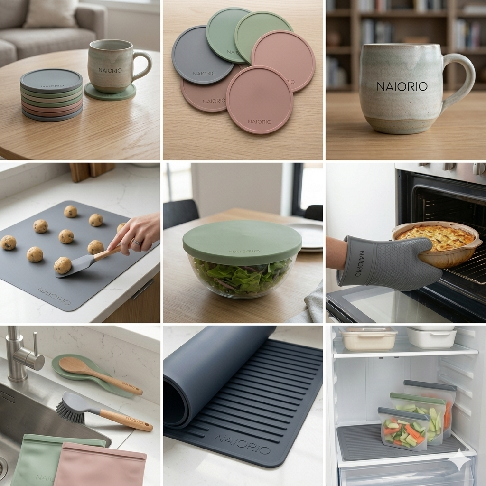

PRODUCT COLLECTION
シリコン・キッチンプロダクト製品一覧

シリコン コースター (6枚セット)
Silicone Coaster Set (6 Pcs)
美しい花のようなディテールとモダンな色彩。滑りにくく、耐熱・防水性に優れたプレミアムデザイン。
Elegant flower-inspired design with rich texture. Non-slip, heat-resistant, and completely waterproof.
Elegant flower-inspired design with rich texture. Non-slip, heat-resistant, and completely waterproof.
- Heat Resistant
- Non-Slip
- Waterproof
- 6-Piece Set
シリコン ベーキングマット
Silicone Baking Mat
正確な目盛りが印字された、生地がくっつきにくいプロ仕様のマット。洗って繰り返し使えて環境に優しい。
Non-stick surface with precise measurement guides. Eco-friendly alternative to parchment paper.
Non-stick surface with precise measurement guides. Eco-friendly alternative to parchment paper.
- Eco-Friendly
- Non-Stick
- Measurement Guides
- Easy Clean
シリコン オーブンミトン
Silicone Oven Gloves
繊細な凸凹テクスチャにより強力なグリップ力を実現。熱いオーブン料理も安全に運べる抜群の耐熱プロテクション。
Textured grid grip for maximum stability. Superior heat insulation for handling hot cookware safely.
Textured grid grip for maximum stability. Superior heat insulation for handling hot cookware safely.
- Max Protection
- Anti-Scald
- Grid Texture
- Flexible Fit

シリコン マルチストレッチ蓋
Silicone Stretch Lids
様々な形状の器に柔軟にフィット。密閉性が高く、食品の新鮮さを長持ちさせる万能エコカバー。
Highly elastic bands fitting various bowl shapes. Creates an airtight seal to lock in food freshness.
Highly elastic bands fitting various bowl shapes. Creates an airtight seal to lock in food freshness.
- Airtight Seal
- High Elasticity
- Reusable
- Multi-Size
シリコン 食品保存袋
Silicone Food Storage Bags
冷蔵・冷凍から湯煎まで対応。漏れを防ぐ安心設計で、野菜や作り置きの鮮度をクリーンに保ちます。
Leak-proof reusable storage bags. Safe for fridge, freezer, and sous-vide cooking.
Leak-proof reusable storage bags. Safe for fridge, freezer, and sous-vide cooking.
- Leak-Proof
- Freezer Safe
- BPA Free
- Eco Friendly
シリコン 水切りマット
Silicone Dish Drying Mat
リブ（溝）構造が素早い乾燥を促し、使用後は丸めてコンパクトに収納。キッチンの省スペースに最適。
Smart ridged structure accents swift drying. Rolls up easily for clutter-free, compact storage.
Smart ridged structure accents swift drying. Rolls up easily for clutter-free, compact storage.
- Fast Drying
- Space Saving
- Heat Resistant
- Durable